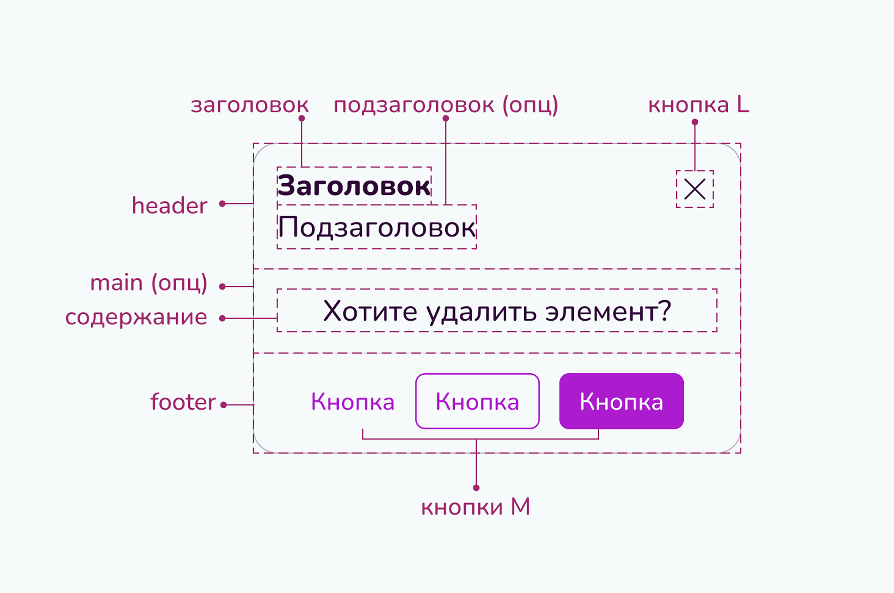
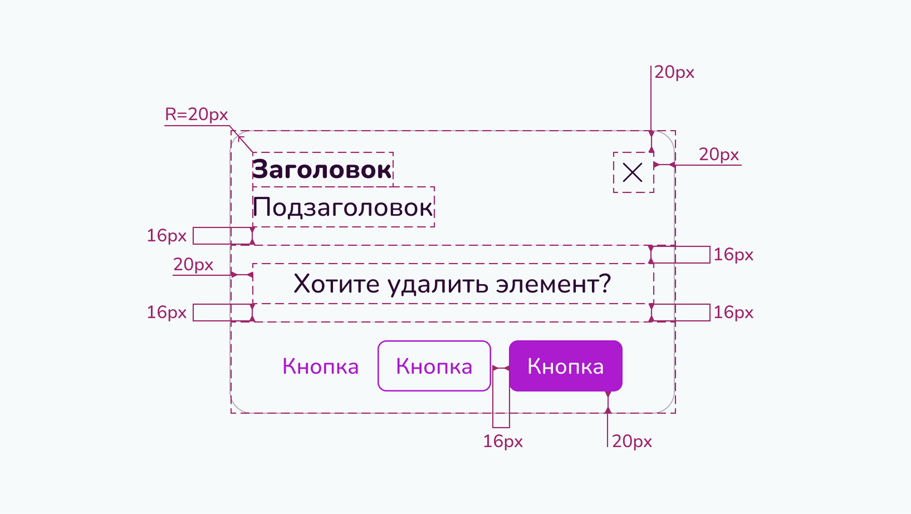

<body>
<pre><code class="language-html">...</code></pre>
</body>Модальные окна
Модальные окна используются для информирования и принятия решений.
Когда использовать?
Модальные окна необходимо открывать после нажатия на кнопку. Открытие окон, не вызванное действиями пользователя, обычно оценивается негативно и ведет к недоверию к сайту.
Спецификация
Текст
Наборный текст и заголовки подчиняются правилам, описанным на странице Типографика.
Выравнивание
- Короткий текст (до 30 символов): выравнивать по центру.
- Длинный текст: выравнивать по левому краю.
- Заголовки в окнах без заглавной иллюстрации выравниваются по левому краю.
- Заголовки в окнах с модальной иллюстрацией выравниваются по центру.
Вёрстка
Окно должно быть расположено статично в центре экрана.
Размеры
Ширину и высоту модального окна можно задавать по необходимости, желательно вписываясь в сетку страницы. Минимальная ширина модального окна 300px, при этом заголовок и подзаголовок должны умещаться каждый в одну строку. Максимальная ширина окна соответствует области контента, предусмотренного сеткой.
Кнопки
Обязательно должна присутствовать кнопка закрыть в верхнем правом углу.
В подвале окна могут быть кнопки всех трех степеней иерархии.
- Primary (всегда ровно одна) кнопку необходимо использовать для целевого действия, например, «Сохранить»
- Secondary (одна или две, если их две, то они должны быть разделены расстоянием, например, одна слева и вторая вместе с Primary справа) кнопку необходимо использовать для важных действий, которые, однако, не требуют первостепенного внимания пользователя, например, «Понятно» (пользователь должен сначала ознакомиться с содержанием, не отвлекаясь на кнопку);
- Empty (максимум одна) кнопку необходимо использовать для маловероятных действий.
Избегайте темных паттернов, например, неверно оформлять кнопку отказа от Cookies Empty кнопкой, поскольку это достаточно вероятное действие, которое пользователь имеет право легко находить.
Кнопки всегда сверстаны в один ряд с промежутками в 16px. В большинстве случаев они выровнены по центру.
Кнопки должны быть расположены в порядке неуменьшения важности (при чтении слева направо можно ознакомиться со всеми вариантами).
Анатомия
Элементы
Статичные размеры
.punctuation { color: black;}
.bracket { color: blue;}
.css .property { color:22px;}
.css .numerical { color:seagreen;}
.css .letter { color:cornflowerblue;}